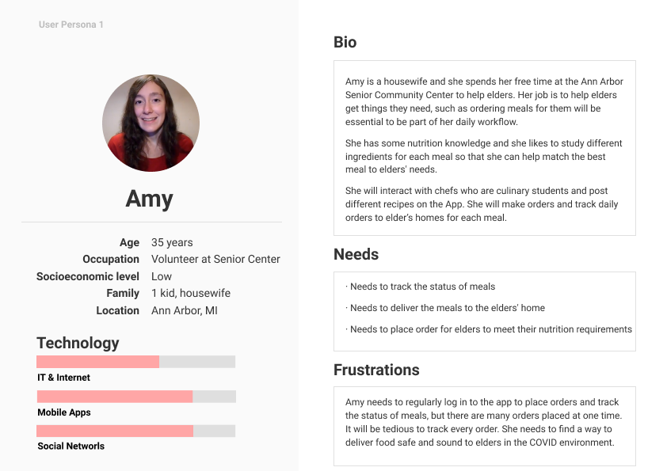
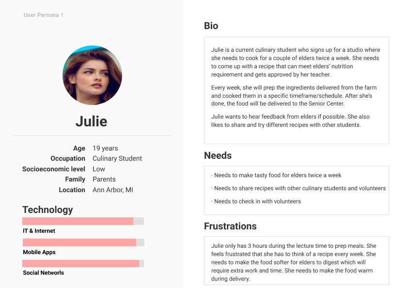
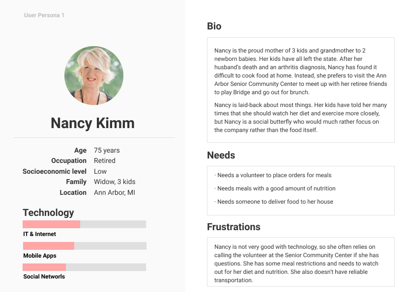

Nutricart
Mobile Application | UX Design | Rapid Prototyping
For this creative jam, the theme is "Food Insecurity and Considerations of Quality and Equity".
Studies have shown that a key problem area in regards to food insecurity is seniors who live alone or
in low-income households. COVID-19 further affects this group, as they may lose
important social connections during the pandemic. At the same time, culinary
students are in need of alternative learning solutions. Students have fewer
opportunities to gain hands-on experience from peers and teachers during
COVID-19. Our product, NutriCart aims to connect these two groups by providing a platform
for culinary students to create and deliver meals to those in need by using
a local community center to facilitate. This project made the TOP 10 Finalist in the Creative Jam.
Read News: "UMSI students earn high honors in Adobe Creative Jam"
Project Type
The College + SoDA Agencie Creative Jam (2 weeks)
Role
UX Designer
Duration
Oct. 2020 (2 weeks)
Methods
Background Research, Wireframing, Prototyping,
Tools
Adobe XD
Team members
Muzi Lin,
Yoojin Choi
Virginia Pollock
BACKGROUND
COVID-19 Food Insecurity
The pandemic has dramatically increased food insecurity and strained an already stressed supply. On Insecurity According to the FAO’s report on The State of Food Security and Nutrition in the World 1: Current estimates are that nearly 690 million people are hungry, or 8.9 percent of the world population—up by 10 million people in one year and by nearly 60 million in five years. The number of people affected by severe food insecurity, which is another measure that approximates hunger, shows a similar upward trend. In 2019, close to 750 million—or nearly one in ten people in the world— were exposed to severe levels of food insecurity. A preliminary assessment suggests that the COVID-19 pandemic may add between 83 and 132 million people to the total (an estimated 2 billion people) number of undernourished in the world in 2020 depending on the economic growth scenario.
CHALLENGE
How to help seniors get proper nutrition? How to help culinary students practice cooking skills?
As a higher health risk for the older people is assumed in terms of eating habits after the Covid-19, much less dine-in restaurants are available and they are the least likely to use online grocery shopping compared to other generations. The bigger problem lies with the senior people who live alone or with low-income households might have more difficulties accessing nutrient-rich foods in this pandemic era than others, partly because they have less opportunity to get the care they need or share health problems with experts. Covid-19 affects these groups of people to eat less nutritious meals which are crucial for their health as well as lose their social connections with other people they were used to before the pandemic. At the same time, there seems to be another group who need to find alternative ways of learning in this era, culinary program students. Covid-19 affects those students directly to have much fewer opportunities now than in the past when they were able to learn hands-on experience from peers and teachers. Though the schools are shut down or going to be remote, they should be able to practice their culinary skills, experiment with their ideas, and share them with larger communities.
GOAL
Designing a mobile app for volunteers at a senior center to monitor meals made by culinary students for seniors
To solve this problem, we aim to create a mobile application that expands the accessibility of nutritious foods for elderly people who are having difficulty in cooking or are not affordable to cook nutrient meals by themselves, by connecting them to the local volunteer community and culinary program students. As a part of the learning experience, the students in culinary programs in the college or university can participate and get academic credits by creating nutrient balanced-meals for elder people, and local volunteer groups such as senior centers or food banks can mediate those two groups to deliver the meals. Unlike traditional food banks, this service can be completely done contactless which will greatly reduce the health risk for both sides.
RESEARCH
Flow Diagram
Pivoting to the idea of an app that connects culinary students and senior/community centers. The volunteer/senior center staff can view meal delivery status, browse recipes, input a sign-up list based on senior center participants, and give feedback to students preparing the dishes. Potential Benefits are below: 1. This ensures a mediator between college students and the elderly population receiving the food. 2. Creates a relationship between a university/community college and their local community. 3. Gives the elderly population options for food, as if it were a restaurant, which alleviates the negative feelings that those receiving food assistance commonly experience (waiting in line and getting whatever they’re serving. No choice or autonomy).

Understand the users
Volunteer
Culinary Student
Senior
UI & Logo Iterations
We created multiple color palettes and logos and we wanted to pick one that could invoke feelings of warmth and community.
Final Style Guideline
Our palette, logo, typeface and design concept are intended to invoke feelings of warmth and community, while also remaining simple and accessible for volunteers. The bright orange is meant to energize while the more muted purple was meant to bring about a feeling of warmth. The logo uses gestalt principles to resemble an abstracted map waypoint for the delivery portion of the app, with a fork and spoon to symbolize the cooking aspect of the app. App users may be seniors who have difficulty reading, so we made our UI elements large and bright in order to make it easier to read. The large, bright typeface was designed to bring attention to the UI elements. For our app, we chose to design within an iPhone 8 interface to better tailor our design toward our target audience: volunteers, seniors and culinary students.

FINAL DESIGN
Home & Calendar
Order & Recipe
Delivery & Notifications